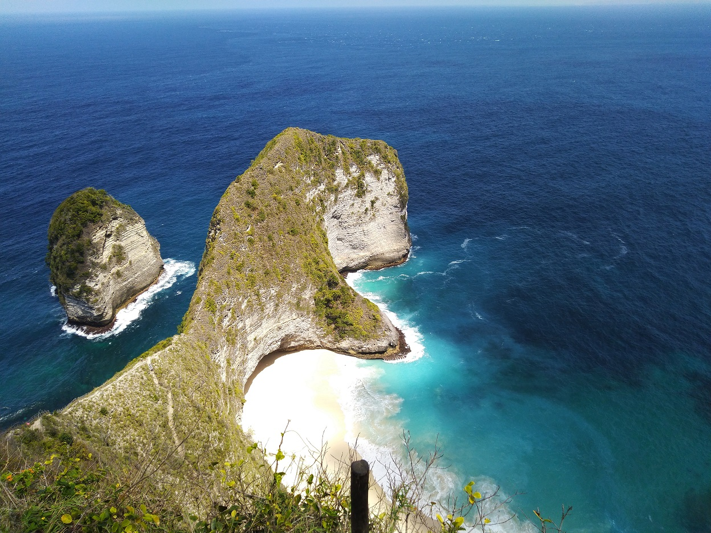

Wisata Nusa Penida
Pulau Nusa Penida merupakan daerah kepulauan kecil yang terletak di bagian selatan Bali daratan dan dipisahkan oleh selat Badung. Sehingga apabila anda ingin liburan/tour atau tirtayatra ke Nusa Penida, Anda harus terlebih dahulu menyebrang melalui jalur laut. Sarana transportasi laut ke Nusa Penida tersedia seperti sampan tradisional (jukung), boat cepat (speed boat), kapal roro Nusa Jaya Abadi ( moda transportasi utama).
Ada begitu banyak tempat indah, Unik, Mempesona, Eksotis dan tentunya Terbaik untuk menghabiskan liburan di Nusa Penida. Berikut adalah beberapa rekomendasi wisata terbaik yang ada di Nusa Penida
Pantai Kelingking

Pantai Kelingking atau Karang Dawa terletak di Desa Buga Mekar. Pantai ini bisa disebut ikonnya Nusa Penida. Hampir semua travel inflencer Indonesia pernah melakukan sesi pemotretan di sini. Lanskap utamanya berupa laut dan tebing karang. Salah satu tebing karang di Nusa Penida berbentuk seperti jari kelingking. Konon, sarat akan nilai historis. Untuk menuju Pantai Kelingking, kamu harus getol bertanya kepada warga sekitar. Sebab, lokasinya tak tertangkap baik oleh GPS. Kamu juga harus berhati-hati kalau membawa motor sendiri, karena jalurnya rusak dan berkelok-kelok.
Pantai Kelingking
Pantai Kelingking atau Karang Dawa terletak di Desa Buga Mekar. Pantai ini bisa disebut ikonnya Nusa Penida. Hampir semua travel inflencer Indonesia pernah melakukan sesi pemotretan di sini. Lanskap utamanya berupa laut dan tebing karang. Salah satu tebing karang di Nusa Penida berbentuk seperti jari kelingking. Konon, sarat akan nilai historis. Untuk menuju Pantai Kelingking, kamu harus getol bertanya kepada warga sekitar. Sebab, lokasinya tak tertangkap baik oleh GPS. Kamu juga harus berhati-hati kalau membawa motor sendiri, karena jalurnya rusak dan berkelok-kelok.